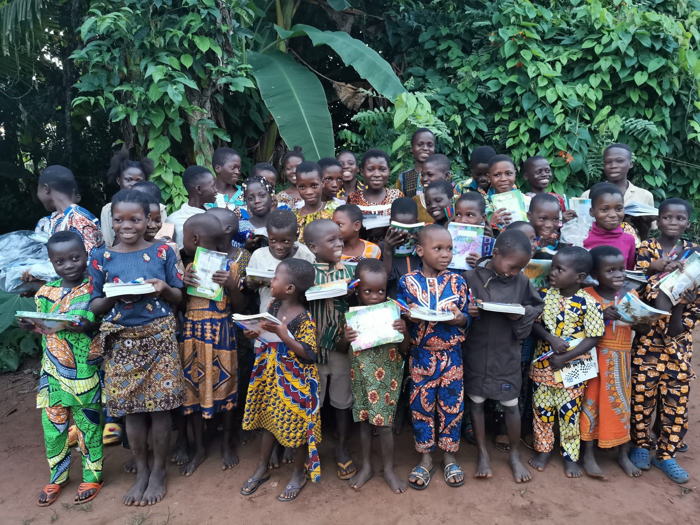

Sécurité Alimentaire
Sécurité Alimentaire

Distribution de colis alimentaires
Cultures Collectives et Ateliers de Jardinage : Mise en place de jardins où les bénéficiaires peuvent cultiver leurs propres fruits et légumes, et Formation des bénéficiaires aux techniques de jardinage et d'agriculture urbaine.
Cultures Collectives et Éducation Nutritionnelle : Sessions d'éducation pour enseigner les principes d'une alimentation équilibrée et saine.
Moyens de Subsistance
Formation Professionnelle et Éducation

Cours de Formation : Formation dans divers métiers comme la couture, la menuiserie, l'informatique, la cuisine, etc.
Programmes d'Alphabétisation : Cours pour améliorer les compétences en lecture et écriture, essentiels pour l'emploi et la gestion des affaires.
Microcrédit et Soutien à l'Entrepreneuriat
Microcrédits : Octroi de petits prêts pour aider les bénéficiaires à lancer ou à développer de petites entreprises.
Formation en Gestion d'Entreprise : Ateliers sur la gestion financière, le marketing, et la planification des affaires.
Développement Agricole
Projets Agricoles
Agriculture Durable : Promotion de pratiques agricoles durables et respectueuses de l'environnement.
Coopératives Agricoles d'Entreprise : Formation de coopératives permettant de collaborer et de maximiser les rendements.
Accès aux Ressources
Fourniture de Semences et d'Outils : Distribution de semences de qualité, d'engrais et d'outils agricoles pour améliorer la production.
Accès à l'Eau et à l'Irrigation : Installation de systèmes d'irrigation pour assurer une agriculture durable même en période de sécheresse.